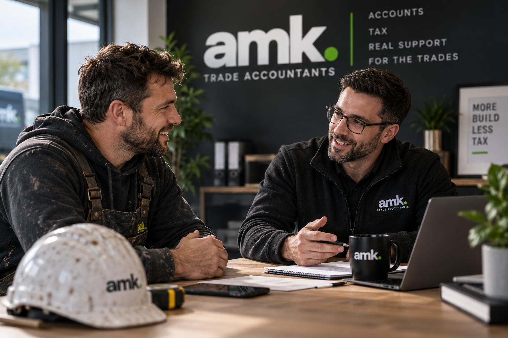

For self-employed tradespeople
Foundation
From£175/ month + VAT
Keep your books. Get the checks and advice.
Discuss FoundationTypical annual turnover: Up to £100k
Construction and trade accountants for sole traders and limited companies. Accounts, CIS, bookkeeping and tax. Practical advice from a person you know.
Free 20-minute phone call. No obligation.
Quarterly reviews in every package. Support from Kye throughout.

“They take the stress out of the numbers so we can focus on running the business.”
Peter Paul's Pointing LtdRead the full feedback
“Finally, accountants who actually understand how our business works. The team at AMK are approachable, straightforward and always on hand when we need advice. They take the stress out of the numbers so we can focus on running the business. Would highly recommend them to anyone in the trades.”
Modern systems keep the records organised. Kye helps you understand the numbers and decide what comes next, with quarterly reviews in every package.
Choose the support you need. We confirm a fixed quote based on your workload.
Foundation is for sole traders. Build and Develop are for limited companies.
No minimum turnover. Every package includes quarterly reviews and a first-month Finance MOT.
For self-employed tradespeople
From£175/ month + VAT
Keep your books. Get the checks and advice.
Discuss FoundationTypical annual turnover: Up to £100k
For limited companies
From£295/ month + VAT
Let us handle the books and CIS.
Discuss BuildTypical annual turnover: £100k–£250k
For limited companies
From£445/ month + VAT
Understand your margins and plan ahead.
Discuss DevelopTypical annual turnover: £250k–£500k
Compare the support. Choose what fits your business.
| Service | FoundationFrom £175/month + VAT | BuildFrom £295/month + VAT | DevelopFrom £445/month + VAT |
|---|---|---|---|
| Accounts & tax | |||
| Annual accounts | Sole trader | Limited company | Limited company |
| Corporation Tax calculation & return | Not applicable | Included | Included |
| Annual confirmation statement Filing fee included for Build & Develop | Not applicable | Included | Included |
| Self Assessment return | 1 sole trader | 1 director | 2 directors |
| MTD for Income Tax updates | Quarterly, where required | Not applicable to company | Not applicable to company |
| Quarterly VAT returns & reverse charge support | If applicable | If applicable | If applicable |
| Bookkeeping & team | |||
| Bookkeeping | You maintain; we check quarterly | Monthly bookkeeping included | Monthly bookkeeping included |
| CIS suffered reconciliation | Included | Included | Included |
| Monthly contractor CIS returns | Quoted separately | Up to 2 active subcontractors | Up to 5 active subcontractors |
| Monthly payroll | Quoted separately | 1 director | Up to 3 people, including directors |
| Bank transactions per month | Up to 50 | Up to 75 | Up to 150 |
| Bank accounts | 2 | 2 | 3 |
| Xero subscription | Included | Included | Included |
| Reviews & advice | |||
| Quarterly business review | 30 minutes | 45 minutes | 60 minutes |
| Quarterly management accounts & margin review | Not included | Not included | Included |
| First-month AMK Finance MOT | Included | Included | Included |
| Email & phone support 98% of enquiries receive a response within 4 working hours. | Included | Included | Included |
Accounts and tax services include preparation and filing. MTD for Income Tax applies to eligible individuals; it is separate from company tax and VAT reporting. Turnover bands are guides, not minimums.
Typically for businesses above £500k, or any business needing more support. Get a tailored quote for monthly reporting, cash-flow forecasting, systems and finance director support. Quarterly reviews included.
Starting monthly fees exclude VAT. Your fixed fee is agreed before work begins. Turnover bands are a guide, not an automatic price increase. We recommend a package based on the work involved. Your fixed quote depends on transaction volume, payroll, CIS, record quality and complexity. Any additional work or setup fees are agreed before we start. Software includes one Xero subscription; third-party apps are quoted separately.
Not sure about your transaction volume? We’ll check it with you. Bank transactions are money moving in and out of your accounts. We confirm how transfers and unusual activity count in your quote.
Includes annual sole trader accounts, one Self Assessment tax return and quarterly MTD for Income Tax updates where required, based on the digital records you maintain.
Includes annual company accounts, Corporation Tax calculation and return, and the annual confirmation statement, with preparation and filing handled by AMK. The Companies House confirmation-statement filing fee is included.
Includes annual company accounts, Corporation Tax calculation and return, and the annual confirmation statement, with preparation and filing handled by AMK. The Companies House confirmation-statement filing fee is included.
Self-employed and need bookkeeping or team support? Ask Kye for a tailored quote.
Kye King · Director at AMK · MAAT · CGMA
8+ years’ experience in accountancy.
MAAT: Member of the Association of Accounting Technicians.
CGMA: Chartered Global Management Accountant.
I’ll support you from our first conversation through to your quarterly reviews and ongoing advice.
Before we start, we’ll agree the work, your fee and how we’ll keep in touch.
Chat with KyeFree 20-minute phone call. No need to choose a package first.
Completed in your first month, provided we receive the records needed for the review.
A look under the bonnet of your business finances to spot potential issues and opportunities for improvement. We check:
You’ll receive a report summarising any issues, changes needed and clear next steps towards a clean financial starting point.
The MOT identifies the work needed. Any catch-up or corrective work is scoped and agreed separately before it starts.
Chat with KyeFree 20-minute phone call. No obligation.
Xero, bank feeds and digital receipts keep records organised. Your accountant turns the numbers into a quarterly review and written action plan.
A missing invoice. A late payment. A cost missed on a job. Here’s why we look beyond the paperwork.
Illustrative examples · fictional figures£1,200 spent on materials, including £200 VAT. The invoice is missing.
Missing evidence can delay a valid VAT claim, leaving more to pay or less to reclaim.
Find the invoice. Check the VAT claim.
You: obtain the replacement invoice.
AMK: check eligibility and include allowable VAT in the appropriate return.
The work is finished. The payment hasn’t arrived.
Wages and suppliers still need paying, even when your customer is late.
Check what’s overdue. Agree the next steps.
You: confirm payment dates and follow up with customers.
AMK: review overdue balances with you and agree any extra cash-planning support.
Labour and materials recorded, but not allocated to the right job.
Missing £2,000 of costs from the job report makes its margin look £2,000 higher.
Match the costs. Review the true margin.
You: provide the job details.
AMK: match costs and review margins within your agreed reporting scope.
Three steps to getting started. No need to choose a package first.
Tell us about your records, team and priorities. We explain how we can help and how to reach us.
Agree the work, responsibilities and monthly fee in writing. Setup or catch-up work is quoted separately.
With your authorisation, we coordinate with your accountant, agree a start date and book your first review.
What we need from you: invoices, receipts, bank access and relevant payroll or job updates. We agree how to share them at setup.
Yes. Foundation includes quarterly updates for Making Tax Digital for Income Tax where required, alongside your annual sole trader accounts and Self Assessment tax return. You maintain digital records; we review them and handle submissions. We’ll check whether MTD applies to you when we get started.
We work with sole traders, subcontractors and growing construction firms. We recommend support around your workload and the help you need—not turnover alone.
Yes. All packages include VAT return preparation and domestic reverse charge support where relevant. All three packages include CIS suffered reconciliation. Build includes monthly contractor CIS returns for up to 2 active subcontractors, and Develop for up to 5. Additional support is quoted separately.
Yes. Cash-flow forecasting is available through a tailored quote. We agree the forecast period, update frequency, information needed and fee before starting. It is not included in the standard Foundation, Build or Develop fees.
Choose an available time in our Google booking calendar for a free 20-minute phone call. Tell us a little about your business when booking, then we’ll talk through what you need. Prefer email? Contact us at contact@amkaccountancy.co.uk.
There is no minimum turnover for any package. The typical bands are up to £100k for Foundation, £100k–£250k for Build and £250k–£500k for Develop, with custom support typically above £500k. Foundation is for sole traders; Build and Develop are for limited companies. We can tailor additional support to your business structure. Crossing a turnover band does not automatically increase your fee: we review the work involved and agree any change before extra work starts.
A free 20-minute call to talk through your business and the support you need.